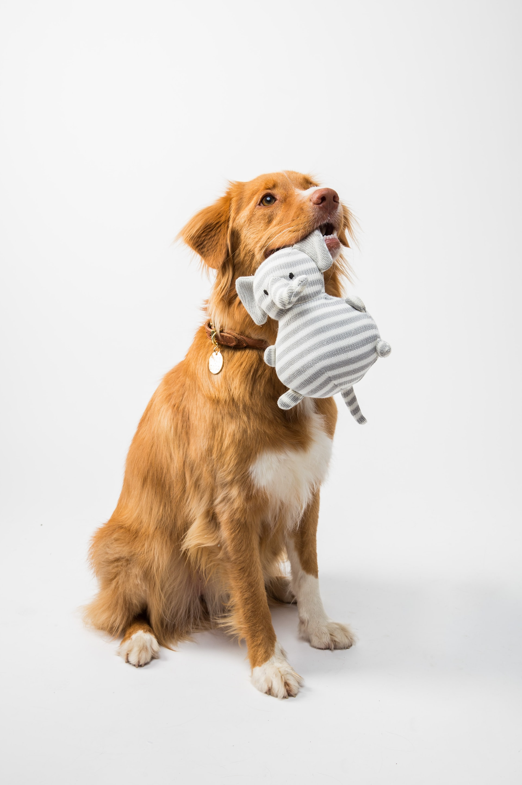
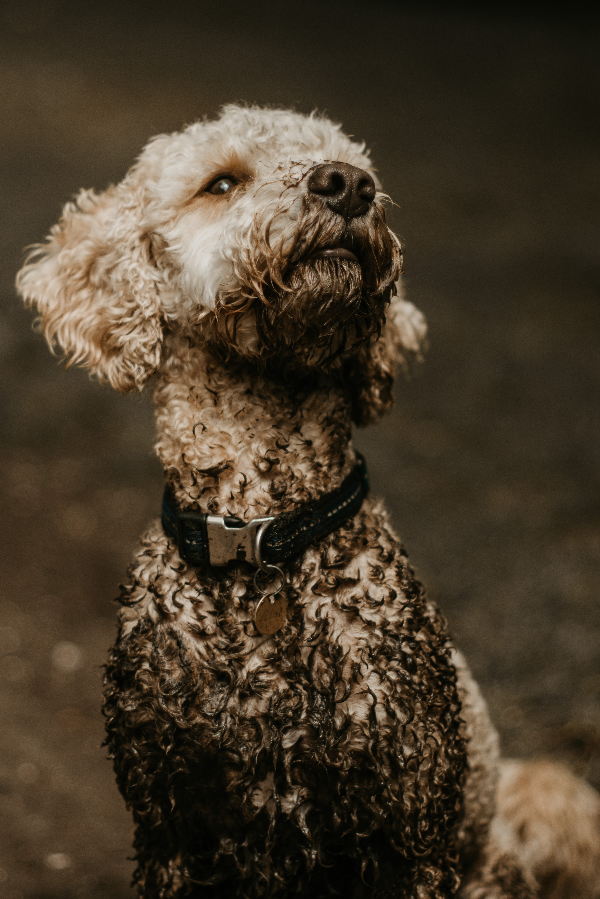
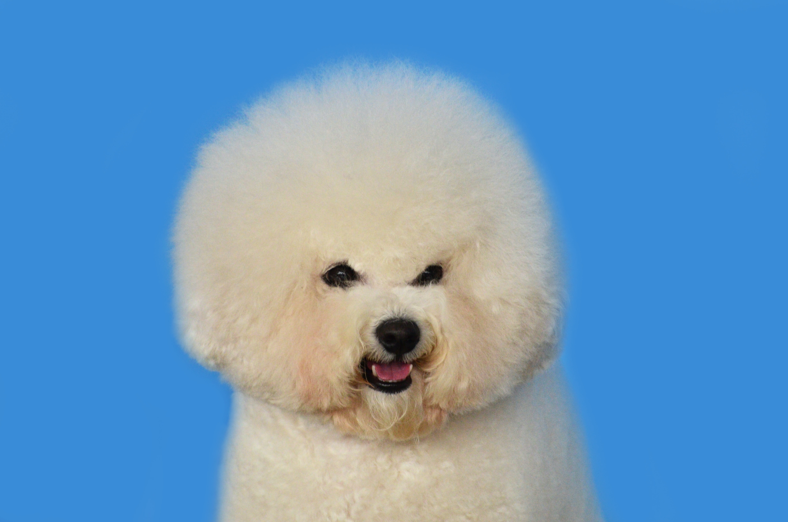

Welcome to Pets-R-Us!
Pets-R-Us is a local store that offers a variety of pets for adoption. We work with local rescues to give pets a second chance
to find a loving family of their own. Our mission is to make sure every pet has a safe home with educated pet owners. This is why we have
expanded into grooming, training, and boarding. We are here to help pet owners who want the very best care for their pet.
You are there for your pet. We are here for you.
Pets-R-Us also sells a variety of pet-related products, supplies, services, and accessories. In addition to our complete selection of in-store products,
we are excited to offer online services where you can create a profile, learn about our services, and sign up for them- All from the comfort of where ever you are! Hop on over
to our grooming, training, or boarding pages to meet our talented professionals and explore our new services.
Some of the local pet rescues we work with have a variety of species for adoption. We offer the usual dogs and cats, but we also have birds, snakes, lizards, turtles,
ferrets, guinea pigs, hamsters, mice, and just about anything else people decide to cage and keep. With this, we have experts at our adoption centers who can advise on
the care of the animals, and help you find the supplies you need within the store.
Dog of the Week
The best of good boys is this handsome woofer. Max is loved by Mary and John Smith. He was adopted in 2006 and joined a family of 3 human brothers. Max is known for playing in the backyard with the children. Mary says he does a great job keeping up with them! The oldest son fell in the pool one day and Max transformed into a hero. He jumped in the pool and helped the young boy to the edge. Way to go Max!
Photo by FLOUFFY on Unsplash
Locations
We serve north of Atlanta with our stores here:123 First Street
Marietta, GA 30087
123 Second Street
Canton, GA 30114
123 Third Street
Douglasville, GA 30456
Hours of Operation:
Our retail store hours are 9am-9pm.Our grooming and training services are offered 9am-7pm.
Our boarding services are open 24/7.
Testimonials
Sally thinks we're great! So does her pet, Hamlet!
Hamlet loves rolling in the mud and all things funk. Sally appreciates how clean groomer
Ashley gets him each time. The nail trims happen just as frequently with this growing boy!

Photo by Matt Higham on
Unsplash
Finding a groomer to get Charlie's afro just right was a challenge for years until we met Charlie the groomer!
He even recommended using a distilled water so dog Charlie's fur wouldn't get those awful brown stains from his eyes.
Charlie loves Charlie!

Photo by Viktor Talashuk
on Unsplash